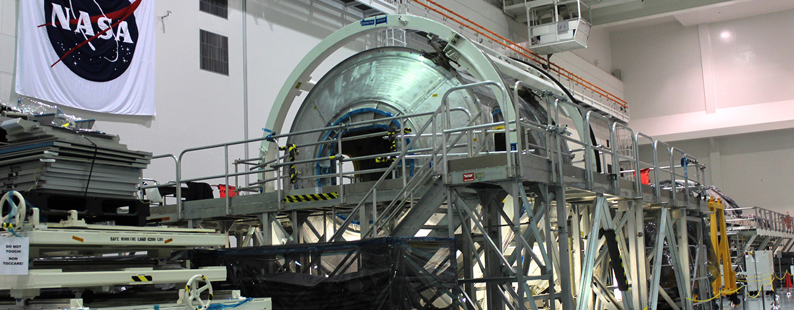

Conheça os locais onde são montados os foguetes e as peças enviadas à ISS.
A reportagem do G1 também conseguiu acesso a áreas da NASA restritas a funcionários. Para isso, foi preciso apresentar com antecedência uma série de documentos e descrever o objetivo da reportagem. O G1 entrevistou também o diretor da NASA na Flórida, o ex-astronauta Bob Cabana, em seu escritório, no quartel general do KSC. Clique aqui para ler a reportagem.
SPACE LIFE SCIENCE LAB
Laboratório de Ciências da Vida no Espaço.
Como se comporta a vida no espaço? Essa é a pergunta que os pesquisadores do Space Life Science Lab tentam responder. O local abriga um conjunto de empresas e universidades que estudam os efeitos do espaço nos micro-organismos. Há desde empresas que fabricam os recipientes que são mandados para a Estação Espacial Internacional até cientistas que preparam os micro-organismos que vão entrar em órbita.
A importância de estudar esses seres no espaço é saber a influência da microgravidade para, num futuro distante, possibilitar a vida humana fora da Terra. Mas não só isso. Os cientistas estudam também o comportamento de vírus, bactérias e células cancerígenas.
O laboratório conta com uma sala que simula algumas das condições encontradas no espaço, como iluminação, pressão e temperatura. Mas há outros fatores que só podem ser estudados “in loco”, como a falta da gravidade e a radiação solar.
Os cientistas também têm à disposição uma sala conectada diretamente com a Estação Espacial Internacional. Isso permite que eles conversem diretamente com os astronautas e acompanhem os experimentos em tempo real.

INTERNATIONAL SPACE STATION PROCESSING FACILITY
Unidade de processamento da Estação Espacial Internacional.
O prédio é usado pelos 15 países que fazem parte do acordo da EEI. Neste local é fabricado todo o “hardware” que é enviado à estação, como módulos, cápsulas e outras partes que compõe a estrutura que orbita a 350 quilômetros de altitude.
A estação começou a ser construída em 1988 e foi concluída em 2010. Além de EUA, Rússia, Japão, e Canadá, compõem o projeto da EEI os países que integram a Agência Espacial Europeia: Alemanha, Bélgica, Dinamarca, Itália, Noruega, França, Países Baixos, Espanha, Suécia, Reino Unido e Suíça.
Marcos Pontes e Robert Cabana. Foto: Geraldo Jr.
A cooperação entre esses países se tornou um marco na história da exploração espacial, antes limitada à disputa entre EUA e União Soviética. “Do espaço não vemos fronteiras entre países, não vemos divisão de cor, raça ou credo. A única coisa que vemos do espaço é um grande e maravilhoso planeta”, diz o diretor da NASA, Robert Cabana.
O Brasil chegou a integrar o projeto da EEI durante alguns anos após um acordo com a NASA. Foi por meio deste acordo que o país conseguiu enviar ao espaço o brasileiro Marcos Pontes na Missão Centenário. Mas, como o país não cumpriu sua parte no acordo de produzir o material solicitado, foi excluído do grupo em 2007.
Do espaço não vemos fronteiras entre países, não vemos divisão de cor, raça ou credo. A única coisa que vemos do espaço é um grande e maravilhoso planeta."
- Robert Cabana, diretor da NASA
VEHICLE ASSEMBLY BUILDING
Edifício de montagem de veículos.
Um dos maiores prédios do mundo. Esta é apenas uma das características do VAB, criado em 1966 para servir como etapa final na linha de montagem dos foguetes. Seus 160 metros de altura são mais do que suficientes para comportar os veículos na vertical, mesmo o maior deles, o Saturno V, colocados sobre o crawler, uma espécie de trator gigante que faz o transporte dos veículos espaciais do VAB até a base de lançamento.
O VAB tem números equivalentes à sua importância para o programa espacial americano. Seu volume é equivalente a três vezes e meia o do Empire State Building. A operação de abertura ou fechamento de suas gigantescas portas leva inacreditáveis 45 minutos.
Cerca de 200 pessoas trabalham diariamente lá, dependendo do projeto que está sendo desenvolvido. Uma das operações mais importantes fica nas mãos dos operadores de guindaste. Eles são responsáveis por operar a máquina que vai “encaixar” as peças dos foguetes. “É uma responsabilidade gigantesca, não só porque as peças valem milhões, bilhões de dólares, mas também porque muitas contêm substâncias nocivas, então a preocupação não é só com o valor, mas também com a segurança das pessoas que trabalham aqui”, afirma Steve Starr, gerente de projetos.
Para controlar uma máquina dessas, com capacidade para levantar 325 toneladas, os trabalhadores passam por testes curiosos de habilidade e precisão. Em um deles, o guindaste tem que descer um tanque com 250 toneladas até encostar em um ovo no chão, sem quebrá-lo. Outra demonstração de precisão é acionar uma lata de spray com o gancho do guindaste sem derrubar a lata. O operador também precisa escrever o nome dele com uma caneta colocada no gancho do equipamento para provar sua habilidade em controlar a máquina.
LAUNCH PAD
Plataforma de lançamento.
Antes de entrar em órbita, os foguetes enfrentam um caminho literalmente pedregoso. Eles saem do VAB sobre o crawler já na vertical, na posição de lançamento. De lá eles passam pelo “crawlerway”, como é chamado o caminho por onde o trator gigante passa.
Com uma largura de 40 metros, o crawlerway é dividido em duas faixas contínuas de pedras, com dois metros de profundidade. As esteiras do “tratorzão” passam pelas pedras, que funcionam como um amortecedor, importante para evitar qualquer vibração que possa danificar algum componente do foguete.
Mesmo com o sistema de amortecimento, o crawler trafega a uma velocidade máxima de 1,6 km/h para levar a estrutura até uma das plataformas que compõem o centro de lançamento do Complexo 39.
Como a distância da plataforma mais distante chega a quase 7 quilômetros, são necessárias cerca de 4 horas e meia para que a estrutura com o foguete saia do VAB e chegue ao local da decolagem.
Na plataforma, além de toda a estrutura metálica usada para prender o foguete e permitir o embarque da tripulação, há também para-raios que evitam que uma descarga elétrica do céu possa atingir os equipamentos.
A famosa contagem regressiva que precede o lançamento de todos os foguetes é feita dentro do Centro de Controle de Lançamento no KSC. O LCC possui quatro salas de lançamento – uma delas usada atualmente apenas para fins educacionais e turísticos.
Cada uma dessas salas tem sua importância histórica dentro do programa espacial norte-americano, lembrada nos quadros pendurados nas paredes com o símbolo de cada missão lançada ao espaço – mesmo as que terminaram em morte, como a dos ônibus espaciais Challenger e Columbia.
A sala de lançamento é responsável por controlar toda a operação de decolagem do foguete, cabendo ao diretor de lançamento a responsabilidade de aprovar ou abortar o processo.
A operação de lançamento mobiliza centenas de pessoas. A equipe envolvida com o controle da operação chega a passar dias dentro da sala, trancada 72 horas antes da decolagem. “É uma experiência muito interessante. A tensão no ar é palpável, dá quase para cortá-la com uma faca. Na medida em que nos aproximamos do fim fica mais e mais ... é difícil descrever. É como se você estivesse em uma montanha-russa subindo e quando está no topo, prestes a descer, há aquela expectativa e aí você vai, grita até sua cabeça explodir. É excitante, mas não até você passar pela parte assustadora”, conta Stephen Payne, diretor de teste do ônibus espacial.
Stephen Payne, diretor de teste do ônibus espacial. Foto: Geraldo Jr.
Uma das salas do LCC foi usada nas filmagens de Armageddon, em 1998. Mas as cenas em que toda a equipe se abraça logo após um lançamento, comuns nos filmes, é coisa de ficção, diz Payne. “Nós não comemoramos até o motor parar de funcionar, o que acontece durante oito minutos e meio. Há emoção, alegria, mas não até que o tanque do veículo esteja em órbita e o tanque de combustível se separe. Aí, sim, relaxamos e aplaudimos.”
A responsabilidade da equipe que atua nas salas de lançamento termina assim que o foguete levanta voo. Segundos após a decolagem a operação passa a ser comandada no Johnson Space Center, em Houston. É lá que são feitas todas as comunicações dos astronautas com a NASA, incluindo a célebre frase “Houston, temos um problema”, dita por Jack Swigert durante a viagem da Apollo 13 à Lua, em 1970.
O MUNDO EM 2006
O mundo era um local bem diferente em 2006. Você lembra o que aconteceu de importante há 10 anos? Confira a seguir.